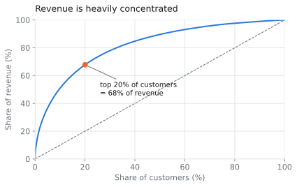
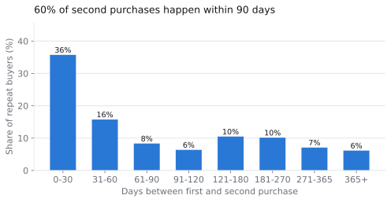
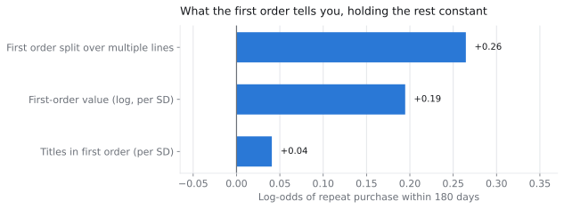
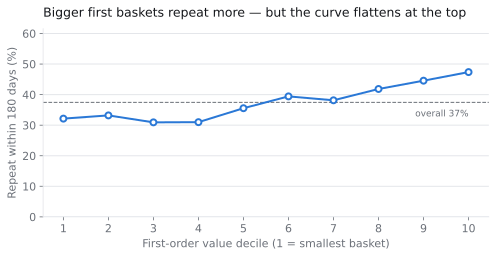
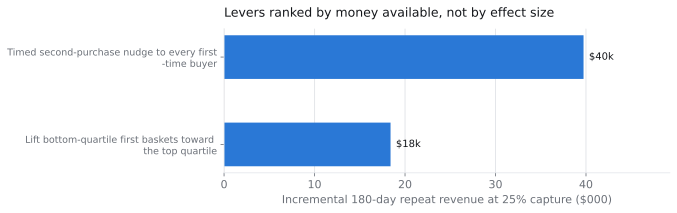

The data
CDNOW was an online music retailer that operated from 1994 until its sale to Bertelsmann in 2000. This is its real transaction log: every purchase made by a 1-in-10 sample of the customers whose first order fell in the first quarter of 1997, followed through to 30 June 1998. It is the dataset behind Fader, Hardie and Lee's work on customer-base analysis.
I picked it for its cohort design rather than its subject matter. Every customer was acquired inside one three-month window and then observed for at least fifteen months, so a 180-day repeat window is fully observed for every single customer. Most retention analyses have to make a judgment call about how to treat recently-acquired customers who haven't had time to come back yet; get it wrong and you score them as churned for the crime of being new. Here that entire class of error is absent by construction.
The question behind the question
"Improve retention" isn't a question, it's a wish. The decision this analysis actually had to inform was narrower and more expensive: should the next unit of effort go into a model that predicts who will return, or into a treatment applied to everyone?
Those are different programs with different owners and different costs. One is a data science investment that pays off in targeting efficiency; the other is a lifecycle investment that pays off in coverage. Framing it this way meant the analysis had a way to be wrong, which is the only thing that makes an analysis worth running.
Plenty of variables predict retention without being usable. Lifetime spend predicts repeat purchase beautifully, but you cannot assign a customer a high lifetime spend. So every result got sorted into observable — useful for deciding who to spend on — or actionable — useful for deciding what to do. Only actionable findings were allowed into the recommendation.
Cleaning, and one decision that mattered
The log has 69,659 rows but only 67,591 orders. The difference is 2,068 rows where one customer has several lines on the same date — those are lines of a single basket, not separate purchase decisions. Rolling them up is not cosmetic: left alone, a customer who bought three albums in one checkout would count as a repeat buyer, and the headline repeat rate would be inflated by an artefact of how the warehouse stored rows.
I also found 80 orders with a value of $0. They're kept as purchase events — someone did transact — but they contribute nothing to revenue.
What the data said
Most customers buy once and disappear
62.5% of customers never placed a second order within 180 days. Revenue is correspondingly top-heavy: the top 20% of customers generate 67.8% of all revenue and the top 5% generate 36.7%.

That concentration is usually read as good news about whales. The more useful reading is the inverse — acquisition budget is being spent on a majority of customers who return nothing beyond a first basket, and optimising the top of the file does nothing about it.
When customers do return, they return fast
The median gap between first and second purchase is 57 days. 36% of second purchases happen within the first month and roughly 60% inside 90 days. There is a narrow, well-defined window in which intervention could plausibly matter.

The first order barely predicts anything
This is the finding the recommendation turns on. A logistic regression on everything knowable at the moment of the first order — basket value, title count, whether the order split across lines, acquisition month — reaches a hold-out AUC of 0.576 against a base rate of 0.375.

That is barely better than guessing. I chose logistic regression over a boosted tree on purpose — the output of this project is an argument a merchandising lead has to be able to check, and coefficients are legible in a way feature importances are not — but the ceiling here isn't the model. It is that a single transaction just doesn't carry much signal about a person's future.

What I tried to rule out
The obvious lever was basket size: customers who bought three or more titles repeated at 46.5% against 31.5% for single-title buyers, a 15 point gap across 11,920 customers. It is the biggest raw gap in the data and it looks like a merchandising win.
It doesn't survive control. Basket value and title count correlate at 0.75, and once value is held constant the title-count coefficient collapses from +0.22 to +0.04 — an 82% attenuation, effectively nothing. Customers who buy three titles come back because they spent more, not because they bought more items.
Acting on the raw gap would push merchandising toward cheap add-ons — anything to get item count up. That moves the metric the analysis was measured on without moving the thing that actually drives return. It is the most expensive kind of wrong answer, because it looks like it's working.
I also checked acquisition month, since a promotion-heavy cohort would be an obvious suspect. Cohort coefficients sit within 0.06 log-odds of each other and the three monthly repeat rates span 37.2% to 37.8%. Not a lever.

Recommendation
Build the treatment, not the model. Ship a second-purchase program timed to the 30–90 day window and send it to every first-time buyer, weighted toward higher-value titles rather than cheap add-ons.
The two findings compose into a single argument. Because the model cannot identify who will return, targeting has nothing to target on — a propensity model would spend a quarter of engineering time to sort customers barely better than a coin. Because the window is short and known, a timed treatment has something concrete to act on. Low predictability is normally a disappointing result; here it is the thing that decides the build.

| Lever | Population | Impact | Effort | Verdict |
|---|---|---|---|---|
| Timed second-purchase nudge | 14,743 | ≈ $39.7k | Low | Recommended |
| Lift bottom-quartile first baskets | 6,364 | ≈ $18.4k | Medium | Recommended |
| Get more titles into the first order | 11,920 | ≈ $40.2k | Medium | Rejected — confounded |
| Fix the weakest acquisition month | 8,476 | ≈ $1.2k | High | Not worth pursuing |
Effort is a judgment, not a computation — nothing in a transaction log tells you what a program costs to build — so it's recorded explicitly rather than folded silently into the ranking. It matters here: the top lever is both the highest impact and the lowest effort, because it rides an existing email trigger and needs no new data model.
Note also that the rejected row carries the second-largest number in the table. Ranking levers by size alone would have picked it, which is the whole reason the control step exists.
Primary metric: 180-day repeat rate, treatment vs. a permanent holdout. Ship at ≥2pp lift (p<0.05) after one full 180-day cohort; kill it below 1pp — the program isn't free and a sub-1pp effect won't clear its own cost. Counter-metric: average value of the second order, because a lift bought by discounting into cheap purchases is not a win.
Two deliverables carry this further: the product requirements document with scope, guardrails and kill criteria, and a five-slide executive deck for the version of this conversation that happens in a room.
What I'd do differently
- The 3pp lift is assumed, not measured. It's the single weakest number here. I chose a deliberately modest figure and made the holdout non-negotiable rather than dressing up a guess as a forecast, but it is still a guess.
- The data has no channel, category or discount fields. Those are the three things I most wanted, and their absence caps how far the causal story can go. With them I'd have tested whether discount-led acquisition explains the low-value, low-retention segment.
- I'd model time-to-second-purchase directly. A binary "did they return within 180 days" throws away the timing information that turned out to be the most useful thing in the dataset. Survival analysis is the right tool and I reached for logistic regression first.